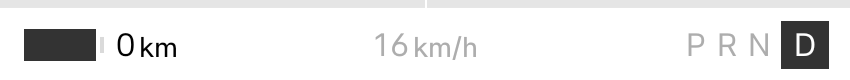
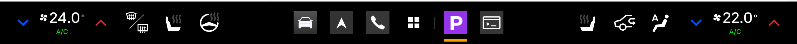
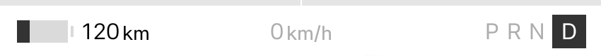
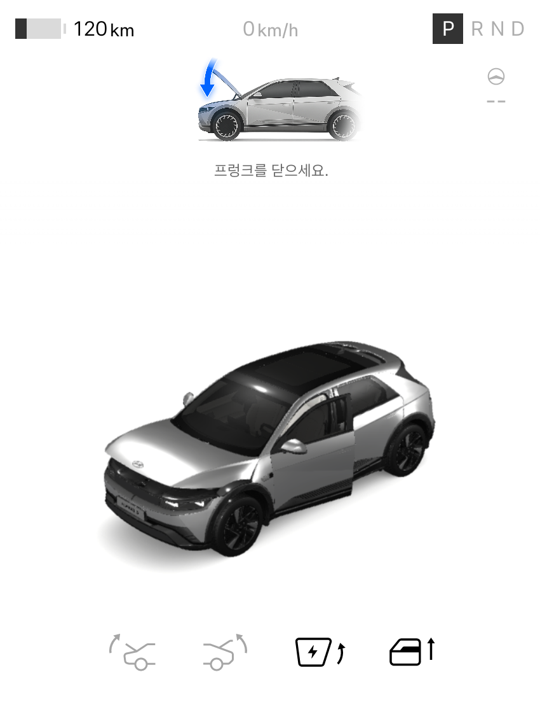
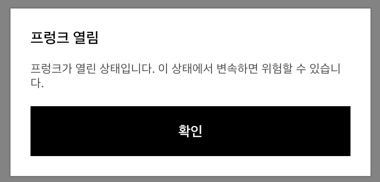

| 기능 | 우리가 구현할 내용 | 필요한 데이터 |
|---|---|---|
| 출발 전 점검 | 열린 문·창문, 배터리 잔량을 한 화면에 모아 표시 | Door, Window, EvBattery |
| 배터리·충전 대시보드 | 잔량, 충전 상태, 잔여 주행거리를 표시하고 설정한 기준 이하에서 안내 | EvBattery의 상태·충전 정보 |
| 운행 기록 | 주행거리와 시간을 저장하고 날짜별 기록·통계 표시 | Odometer의 트립 거리·시간 저장·집계는 앱에서 구현 |
| 공조 상태 화면 | 공조 전원, 목표 온도, 풍량을 한 화면에 표시 | HVAC 상태 정보 값을 바꾸려면 제어 권한 필요 |
| 차량 경고 모아보기 | 차량 경고와 타이어 상태를 읽어 점검 항목 표시 | Safety, Tire 지원하는 항목만 사용 |
| 좌석·편의장치 상태 보기 | 좌석 위치·각도, 조명, 와이퍼 등 필요한 항목을 골라 표시 | Seat, Light, Wiper 등 |
| 주행 상태에 따라 바뀌는 화면 | 주차 때는 상세 화면, 주행 중에는 허용된 정보만 표시하도록 전환 | CarUxRestrictions 주행 중 사용을 위한 앱 설계 필요 |
차량 데이터로 무엇을 보여 줄지 판단하는 규칙, 화면 구성, 기록 저장, 통계, 사용자 설정은 우리가 구현한다. SDK는 필요한 차량 정보를 읽거나 변경 이벤트를 받는 데 사용한다.
사용하려는 항목이 해당 차량에서 지원되는지 확인하고 읽기 권한을 선언해야 한다. 콘솔에서 값을 바꿀 수 있어도, 우리 앱에서 같은 항목에 접근할 수 있는지는 별도로 확인한다.
참고: Vehicle SDK 기능 · 지원 여부 확인 · 권한 · 주행 제한
| 만들 수 있는 기능 | 구현 내용 | 필요한 연동·조건 |
|---|---|---|
| 목적지 즐겨찾기 | 저장한 장소를 선택하면 기본 내비게이션에 목적지 전달 | NaviHelper 장소 좌표·주소 등 목적지 정보 |
| 여행 경유지 계획 | 방문할 장소를 추가·삭제하고 경유지가 포함된 경로 요청 | NaviHelper의 경유지·경로 API 장소 목록은 앱에서 관리 |
| 충전소 안내 | 충전소 목록을 보여 주고 선택한 충전소로 길 안내 연결 | NaviHelper + 외부 충전소 데이터 요금·실시간 이용 가능 정보는 별도 연동 |
| 음성으로 앱 기능 실행 | 메모 추가, 앱 안의 검색 등 우리가 정의한 기능을 음성 명령과 연결 | Gleo Interface App Schema 등록·연동 환경 확인 |
| 음악·오디오 앱 | 재생 목록, 즐겨찾기, 재생·일시정지 등 구현 | Android 미디어 기능 음원 데이터와 오디오 포커스 처리 |
| 주차 중 콘텐츠 앱 | 영상, 학습 자료, 간단한 게임 등 차량 데이터 없이도 동작하는 앱 | Android 앱 기능 주행 중 사용 제한에 맞춰 동작 |
| 차량 설정 프리셋 | 온도·풍량·열선 등 자주 쓰는 설정을 묶어 적용 | Vehicle Control 사용 가능 여부와 제어 권한부터 확인 |
| 구분 | 문서에 안내된 상태 |
|---|---|
| Vehicle State, NaviHelper | 별도 SDK 사용 신청 없이 이용 가능. 개별 API의 지원 여부와 권한 확인은 필요. |
| Vehicle Control, FusedLocation, TTS, STT | SDK 신청 가이드에는 ‘준비 중’으로 안내됨. 해당 기능에 의존하는 앱은 공모전 제공 권한과 프로젝트의 실제 사용 상태부터 확인. |
| Gleo Interface | 앱 기능을 음성 명령과 연결하는 가이드가 공개돼 있음. 위 TTS/STT SDK의 신청 상태와는 구분해서 확인. |
내비·음성 연동과 차량 제어는 아직 우리 앱에서 실행해 본 기능이 아니다. 차량 데이터 조회부터 구현하고, 필요한 연동을 추가할 수 있다.
참고:
NaviHelper ·
Gleo Interface ·
음악 앱 ·
오디오 포커스 ·
SDK 사용 신청
문서 확인: 2026년 11월 2일
| 상태 | 동작 |
|---|---|
| P · 0km/h | 기본 앱 사용 가능 |
| D · 가속 | 속도 증가, 앱 사용 제한 화면 표시 |
| D · 다시 0km/h | 정지해도 앱 사용 제한 유지 |
| R / N · 0km/h | 주행 제한 상태 유지 |
| P로 변경 | 제한 해제, 앱 화면 복원 |
주행 중 사용 허용 설정이 없는 기본 테스트 앱의 동작이다.

| 기능 | 조작한 값 |
|---|---|
| 공조 전원 | Off → On |
| 운전석 목표 온도 | 22°C → 24°C |
| 풍량 | 3 → 5 |

| 기능 | 설정한 값 | 차량 화면 |
|---|---|---|
| 배터리 잔량 | SOC 25% | 배터리 잔량 도형 변경 |
| 잔여 주행거리 | 120,000m | 120km로 표시 |

| 기능 | 조작한 값 | 반영된 내용 |
|---|---|---|
| 앞왼쪽 도어 | 닫힘 → 열림 | 차량 그림의 문이 열림 |
| 앞왼쪽 창문 | 0% → 50% | 콘솔에 50%로 표시 |
| 프렁크 | 닫힘 → 열림 | 열림 안내와 경고 창 표시 |

